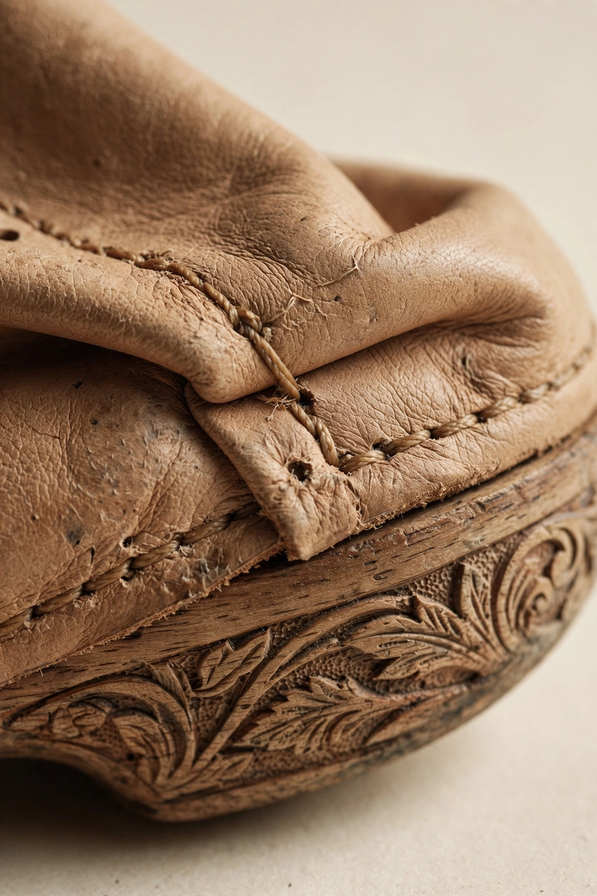

Kulit tan nabati.
Direndam ekstrak pohon, bukan kromium. Butuh sebulan lebih lama — dan itu alasannya dipakai.
Kulit tan nabati (vegetable-tanned, disingkat veg-tan) diolah dengan tanin dari kulit kayu pohon jati dan akasia, bukan garam kromium seperti kulit mayoritas sepatu massal. Prosesnya lambat: puluhan hari perendaman, pengeringan alami, lalu pemotongan yang hanya memakai bagian paling rata dari setiap kulit.
Yang penting bukan prosesnya, tapi apa yang terjadi setelahnya. Kulit veg-tan menyerap minyak dari pemakainya, menggelap di titik yang sering terlipat, dan mengikuti bentuk kaki sampai tidak ada dua pasang yang punya lekukan sama. Batasnya jelas: kalau tidak pernah dirawat, ia jadi kering — makanya ada lima langkah perawatan.
 Kulit menunggu potong — Kulon Progo → Yogyakarta
Kulit menunggu potong — Kulon Progo → Yogyakarta
Kenapa tidak yang lebih murah
Kulit kromium selesai dalam sehari dan harganya seperempatnya. Hasilnya juga konsisten — dan tidak berubah apa pun selama masa pakai. Kami memilih yang sebaliknya: bahan yang punya memori. Satu-satunya downside adalah varian warna antar kulit; kami tandai tiap edisi supaya kaki kiri dan kanan berasal dari potongan yang sama.
Lihat produknya